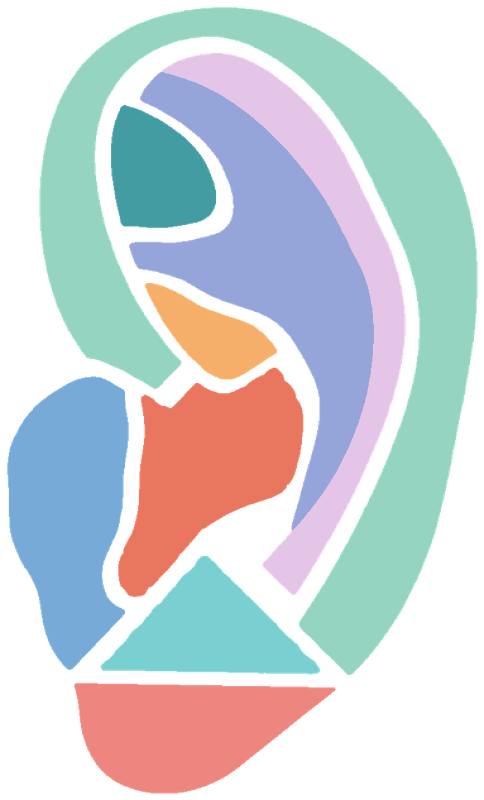

Anatomía de la oreja
Toca cada número para conocer la parte de la oreja y su lugar en el mapa de auriculoterapia

i
Dónde está
i
Toca cada número para conocer la parte de la oreja y su lugar en el mapa de auriculoterapia
